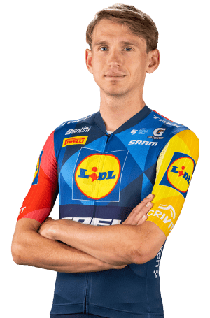

Lennard Kämna
Datos personales
- Nombre completo: Lennard Kämna
- Fecha de nacimiento: 09/09/1996
- País de nacimiento: Alemania
- Equipo: Lidl - Trek
- Dorsal: 83

Datos equipos
- Lidl - Trek (2025-2026)
- BORA - hansgrohe (2020-2024)
- Team Sunweb (2017-2019)
- Stölting Service Group (2016)
- Team Stölting (2015)
- LV Brandenburg (2014)
Temporada 2025
| Datos | Resultados |
|---|---|
| Carreras | tbd |
| Victorias | tbd |
| Podios | tbd |
| Maillots | tbd |
| Equipos | tbd |
| Etapas | tbd |
Multimedia
Equipo Lidl-Trek en la VueltaCiclista Española 2026